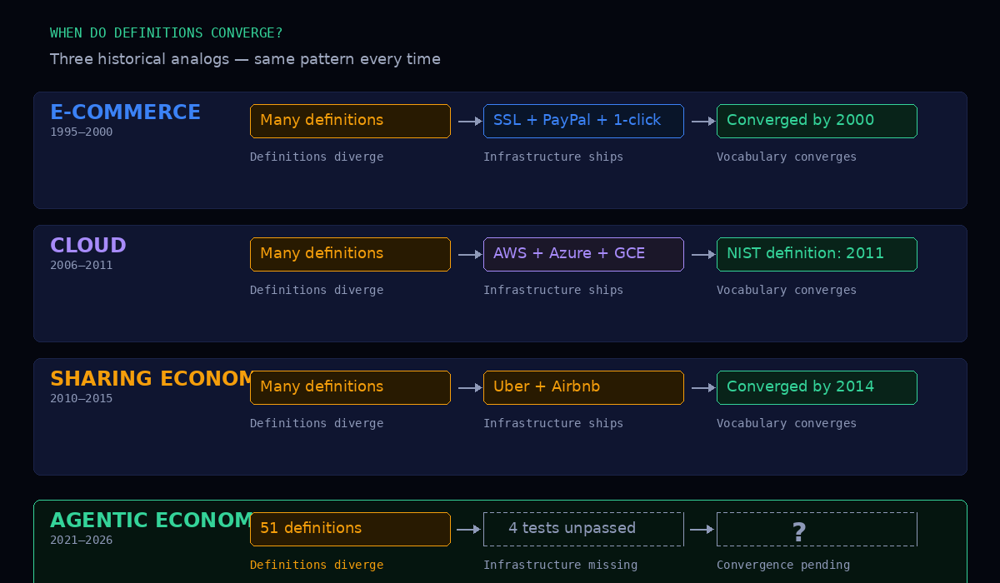

I spent three months reading everything anyone has published about the “agentic economy.” Academic papers. VC memos. Central bank reports. Protocol whitepapers. Consulting decks. Standards body drafts. Fifty-one sources in total, published between January 2021 and March 2026.
They do not agree on what they are talking about.
Not on what counts as an agent. Not on what counts as an economy. Not on whether the infrastructure exists, is being built, or is purely hypothetical. Fifty-one maps. No territory.
The count
I catalogued every published definition I could find. Microsoft Research, Sequoia Capital, the Bank for International Settlements, Coinbase, Stripe, the World Economic Forum, Gartner, Fetch.ai, the OECD, Google, Anthropic — at least forty others. I classified them along five axes: agent type, economic role, settlement assumption, identity model, and time horizon.
Zero pairwise convergence on all five axes. Not a single pair of definitions agrees on everything.
When Stripe says “agentic economy,” they mean a human using an AI assistant to buy something — the credit card is still at the end of the chain. When Fetch.ai says “agentic economy,” they mean autonomous agents that own wallets and trade with each other, no human in the loop. Both get the same label. The difference is not a nuance. It is a structural fault line that I documented in the taxonomy paper.
But here is the question I had not asked before: is this normal?
This has happened before
Three times, in fact.
Electronic commerce, 1995–2000. In 1995, “e-commerce” could mean EDI between mainframes, a website with a shopping cart, or an email order to a supplier. By 2000, the definitions had converged. Not because researchers agreed on a definition. Because Amazon, PayPal, and Visa built the infrastructure that settled the argument. SSL, one-click checkout, and credit card processing determined what “buying something online” actually meant.
Cloud computing, 2006–2011. The same pattern. Before AWS, “cloud” was a metaphor. Gartner, NIST, and a dozen vendors had competing definitions. By 2011, NIST published what became the canonical definition — but it was canonical because AWS, Azure, and Google Cloud had already built what it described. The definitions converged after the infrastructure, not before.
The sharing economy, 2010–2015. “Sharing economy” could mean Airbnb, a community tool library, or a cooperative childcare network. Uber and Airbnb settled the definition by building the dominant platforms. Today, “sharing economy” means peer-to-peer marketplace with algorithmic matching and dynamic pricing. That is not what the academics meant in 2010. But it is what got built.
In every case, definitions did not stabilize because the field reached intellectual consensus. They stabilized because infrastructure matured and forced convergence. The vocabulary was selected by what got built, not by what got published.

Four tests
So I wrote four falsifiable tests. Concrete, binary, empirically verifiable. Their resolution will force the definitions to converge.
Test 1 — Autonomous settlement. Can two agents complete a financial transaction — escrow, delivery, release — without a human approving any step? Today: no production system does this at scale.
Test 2 — Cross-platform identity. Can an agent carry its reputation from one platform to another? Today: every platform is a walled garden. Your agent’s track record on Platform A is invisible on Platform B.
Test 3 — Dispute resolution without humans. When a transaction goes wrong between two agents, can the dispute be resolved programmatically? Today: every dispute escalates to a human support ticket.
Test 4 — Micropayment viability. Can an agent-to-agent transaction at $0.001 be settled profitably — meaning the settlement cost is lower than the transaction value? Today: credit card minimums and gas fees make this impossible.
As of March 2026, all four tests remain unpassed. When they start getting passed, the definitions will converge around whatever infrastructure passes them — exactly as happened with e-commerce, cloud, and the sharing economy.
Why this matters
The agentic economy is not a failed concept. It is a pre-infrastructural one. The vocabulary is running ahead of the plumbing. That is normal. It happened before. But it means that anyone making decisions today — investment decisions, policy decisions, infrastructure bets — is navigating with fifty-one maps that describe fifty-one different territories.
The paper does not argue for one definition over another. It argues that the argument is premature. Build the infrastructure. The definitions will follow.
The full paper is open-access on Zenodo: doi.org/10.5281/zenodo.19679860
This is the fourth paper in the series. The first three — reputation, taxonomy, verification — describe the infrastructure that does not yet exist. This one explains why its absence is the only thing the fifty-one definitions actually agree on.
Cheers from Madrid,
René